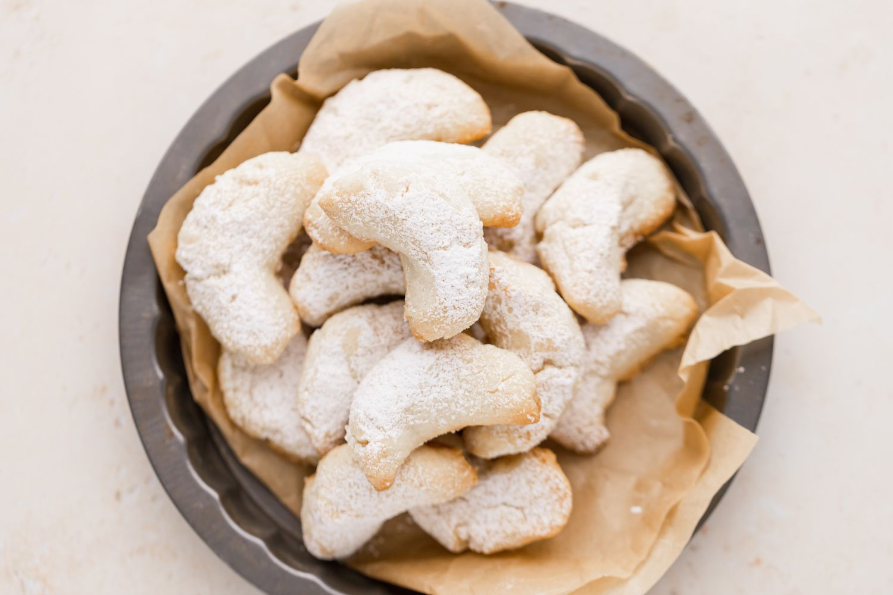

Crescent Cookie Recipe

Description
Today I’m sharing a cookie recipe that is near and dear to my heart… almond crescent cookies. This recipe is a remake of my nanny’s crescent cookies that we’ve made every single year for Christmas since I was a little girl. The combo of a crisp pecan shortbread cookie paired with the sweet, melt-in-your-mouth powered sugar coating is so delicious and nostalgic!
Ingredients
- 1 cup unsalted butter, room temperature
- 1cup granulated sugar
- 1teaspoon vanilla extract
- 2 teaspoons almond extract
- 2 1⁄3 cups all-purpose flour
- 1 cup ground almonds
- 1 cup powdered sugar
Steps
- Preheat oven to 350 degrees F.
- Spray several cookie sheets with cooking spray.
- With a mixer, beat the butter with sugar until light and fluffy.
- Add vanilla extract and almond extract, beat until incorporated.
- Stir in the flour and almonds. Work flour mixture into a firm dough.
- Working with 1 tablespoon of dough at a time, lightly roll and then shape it so the middle is thicker than both ends. Bend dough log into a crescent shape.
- Place on greased cookie sheets and repeat until all dough is used.
- Bake 12-15 minutes or until light brown.
- Sift powdered sugar into a small shallow bowl.
- While the cookies are still warm , roll the crescents in the powdered sugar.
- Cool on racks.